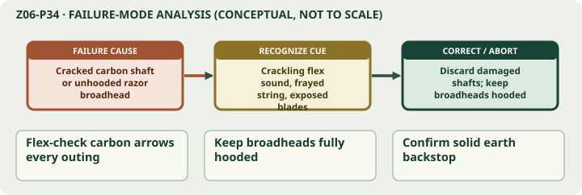

Z06-P34 · Hunting and fishing · New manuscript
Archery Equipment Inspection, Broadhead Guards and Backstops
Prevent catastrophic arrow-shaft splinters, broadhead lacerations, and pass-through hazards during lawful archery.
When it applies · Archery range practice and lawful bowhunting.
Equipment · Covered rigid broadhead quiver, inspected carbon/aluminum arrows, bowstring wax, certified instruction.

Actions
- Inspect every carbon or fiberglass arrow shaft visually and with a gentle flex-and-listen check before shooting, immediately discarding any cracked, splintered, or bent shaft that can shatter into the bow hand.[H03]
- Store razor-sharp broadheads inside a rigid, fully covered quiver—never carry loose arrows in hand while walking or climbing—to prevent lethal arterial lacerations during a fall.[H03, M01]
- Verify an unobstructed shooting lane and solid safe backstop beyond the target, never nocking an arrow until settled safely on stand or at the firing line.[H03]
Failure recognition · Shooting a cracked carbon arrow or tripping while holding an exposed broadhead causes severe hand impalement or arterial bleeding.[H03, M01]
Verify · All arrow shafts pass flex inspection, broadheads stay hooded during movement, and backstops are clear.[H03]
Stop or change course · Stop shooting immediately if a bowstring frays, a limb cracks, an arrow strikes rock/wood, or bystanders enter downrange.[H03]
Evidence and editorial notes
- H03 · Minnesota DNR · Firearms Safety Certification and Hunter Education (Current web edition)
- Section: Four fundamental firearm safety rules and certification · Conditions: Any firearm handling, transport, or field carry
Support: Treat every firearm as loaded, keep the muzzle in a safe direction, keep finger off the trigger until ready to shoot, and verify target and what is beyond it.
Limitations: Certification is required by age/statute in Minnesota; written summaries never substitute for formal certified safety instruction. · Conflicting evidence: None noted.
Editorial note: Mandatory Z06 bounded weapon-safety gate. · Specialist reviewer: Certified hunter-education and firearm safety instructor
Primary source · checked 2026-11-25 - M01 · American College of Surgeons · STOP THE BLEED Training Course (current web edition)
- Section: Ensure Your Own Safety; Find Life-Threatening Bleeding; Compress · Conditions: Lay responder encountering severe external hemorrhage
Support: Ensure scene safety first, call 911, expose the wound to locate life-threatening bleeding, and apply firm continuous direct pressure with clean gauze or cloth.
Limitations: Does not replace formal hands-on Stop the Bleed training or EMS trauma care. · Conflicting evidence: None across ACS/ARC guidelines.
Editorial note: Separates life-threatening arterial/venous hemorrhage from minor scrapes. · Specialist reviewer: Wilderness medicine and trauma EMS
Primary source · checked 2026-11-24
Source lineage · New manuscript (Z06 P17 equipment safety) · Classification · New manuscript.